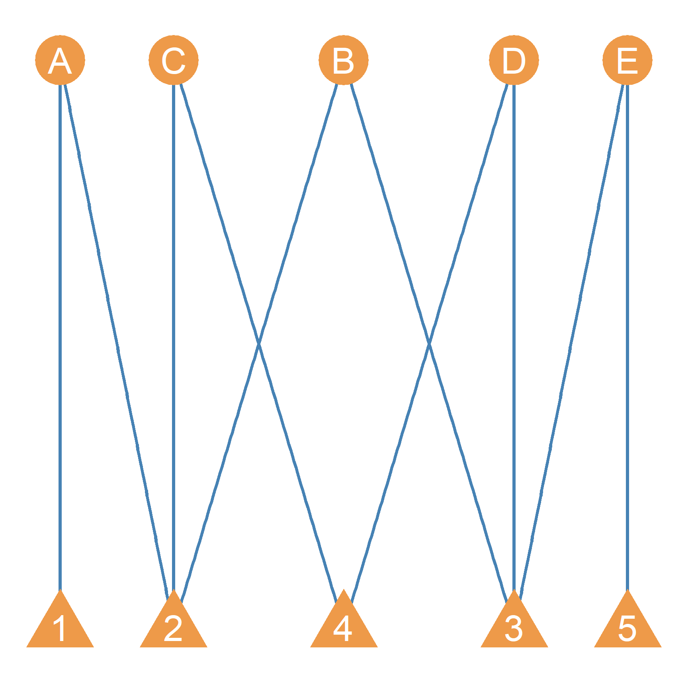
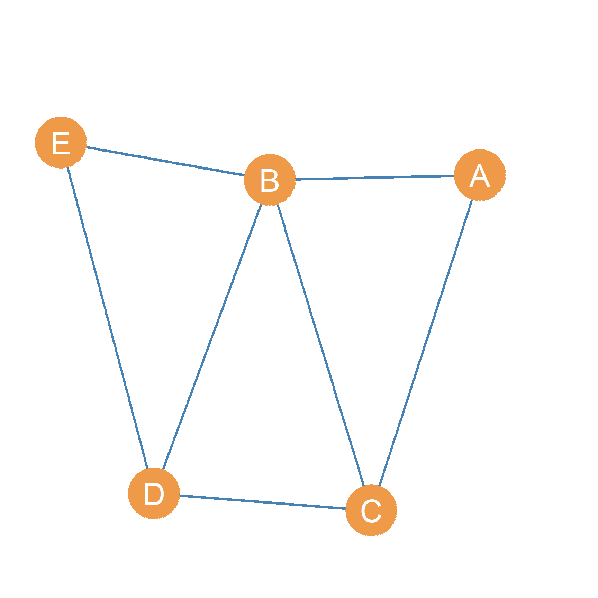
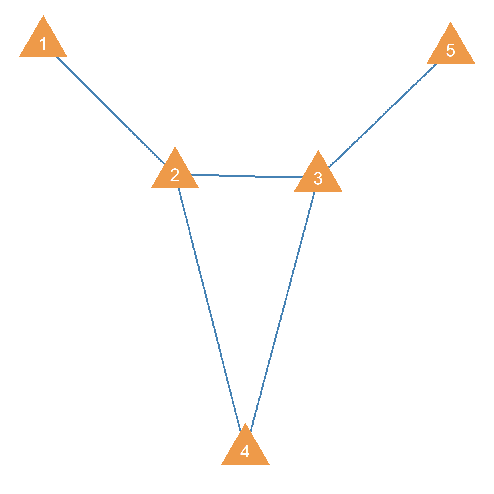
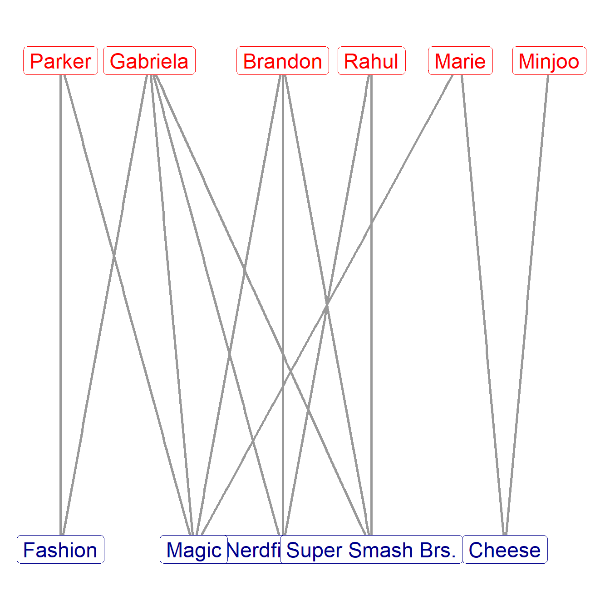
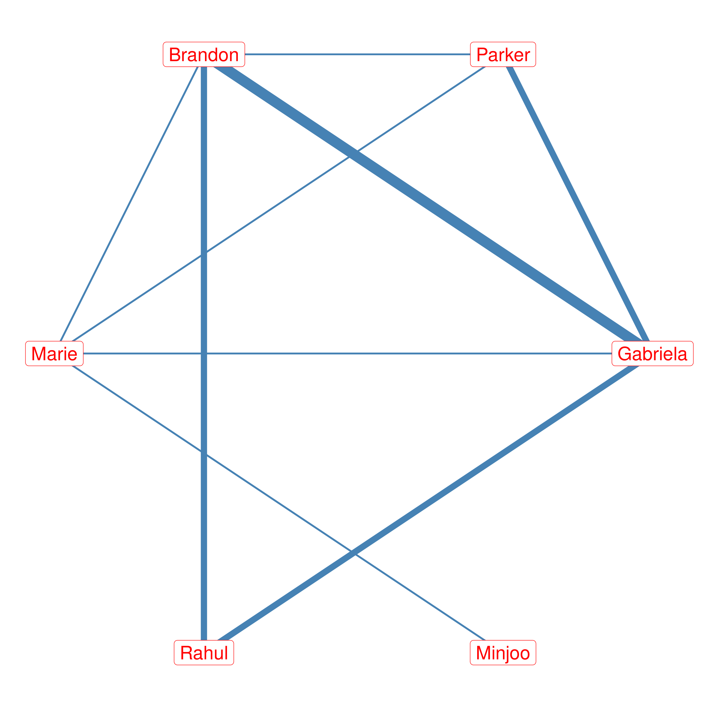
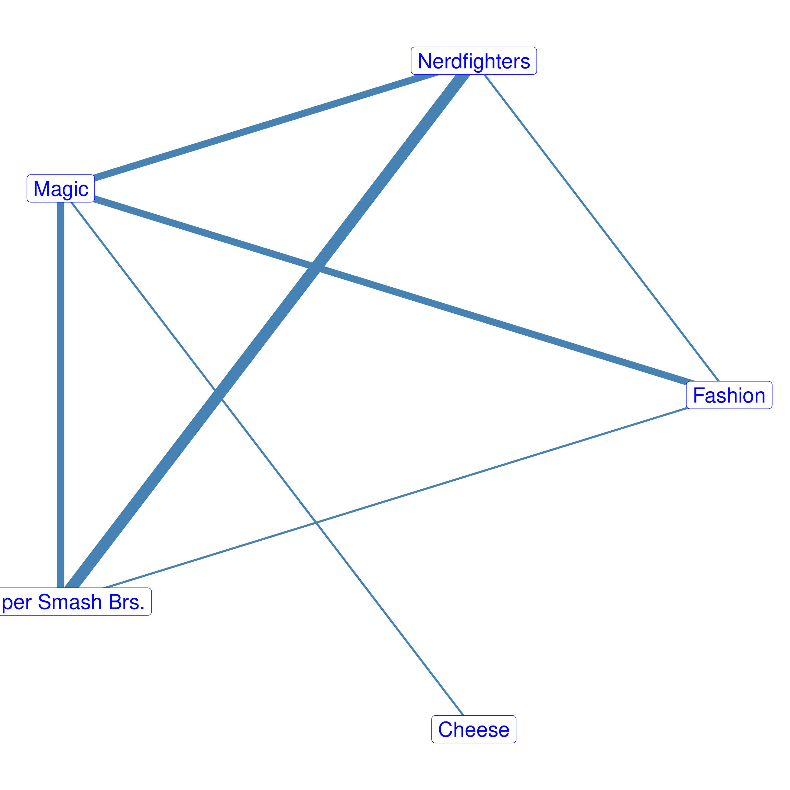

| Fashion | Nerdfighters | Magic | Super Smash Brs. | Cheese | |
|---|---|---|---|---|---|
| Gabriela | 1 | 1 | 1 | 1 | 0 |
| Parker | 1 | 0 | 1 | 0 | 0 |
| Brandon | 0 | 1 | 1 | 1 | 0 |
| Marie | 0 | 0 | 1 | 0 | 1 |
| Rahul | 0 | 1 | 0 | 1 | 0 |
| Minjoo | 0 | 0 | 0 | 0 | 1 |
35 Affiliation Networks
Many social networks are not composed of person-to-person relationships. Instead, the link goes from people to some larger event, group, or collaboration. Consider, for instance, people going to parties or to concerts. Or people joining or becoming members of groups, clubs, and organizations. Or artists collaborating on a project, or scientists getting together to write a grant or write a paper.
These networks, while featuring many person-to-person relations, also feature a more abstract relationship between people and the events, groups, and projects they join. Because people tend to participate in multiple events, join multiple groups, or collaborate on multiple projects, we can build a network that, rather than having one type of node, has two types: people and the groups, events, and projects they participate in.
Can you think of other examples of two-mode networks you have experience with?
The general relationship between people and the larger entities they join is called an affiliation, and the networks that result from links between people and the groups, projects, and events they join are also referred to as affiliation networks. An affiliation.
This lesson will discuss some specialized analytic tools from graph theory and matrix algebra designed to analyze affiliation networks. Affiliation networks are a special case of the larger class of two-mode networks, which are characterized by having two types of vertices. These are, in turn, a subset of the even larger class of multi-mode networks, which are characterized by having more than two types of vertices.
35.1 Bipartite Graphs
A bipartite graph is useful to represent a network where, rather than ties occurring between nodes of the same kind (e.g., people connected with other people), ties occur only between nodes of different kinds but never between nodes of the same kind. Typically, the two different types of nodes are located at different levels of analysis or aggregation. As such, bipartite graphs are well-suited to capturing the sociological concepts of affiliation or membership in larger groups or events (Breiger 1974). For instance, actors and the movies they make, scientists and the papers they write, or people and the groups they belong to.1

For example, people work at companies, so we might say that a worker is connected to the company rather than to any specific individual there. People also connect with sports teams, schools, religious communities, and other organizations, which can influence how they structure their social world.
In the graph theoretic sense, a bipartite graph \(G_B\) is a graph featuring two sets of nodes \(V_1\) and \(V_2\) and one set of edges \(E\). Thus, a bipartite graph, like a signed and a weighted graph, is a set of three sets:
\[ G_B = (E, V_1, V_2) \tag{35.1}\]
- represents a network diagram of a bipartite graph where circles connect to triangles (with the shapes standing as labels for the two sets of nodes). In the Figure, \(V_1 = \{A, B, C, D, E\}\) and \(V_2 = \{1, 2, 3, 4, 5\}\). The edge set \(E\) is \(\{A1, A2, B2, B3, C2, C4, D4, D3, E3, E5\}\).
One common example of two-mode networks that can be represented using bipartite graphs in sociology is corporate interlock networks (Mizruchi 1983). If 1) represented such a network, we could think of the circles as members of the company’s board, and the triangles as the board of each company. Because the same executive can serve on more than one company’s board, board member A is on the boards of companies 1 and 2, while board member B is on the boards of companies 2 and 3.
Note that edges in a bipartite graph are symmetrical and thus bipartite graphs are (generally) undirected. This makes sense, since the relationship affiliation or membership is indeed symmetrical by definition. If person A is a member of the board of company 2, it is understood that company* 2* has person A as a board member.
In the same way, note that there is no reason why the cardinality of two node sets in a bipartite graph has to be the same (although they are in the example provided). In a real-world corporate interlock network, for instance, there will generally be more people than companies, so \(|V_1| > |V_2|\).
35.2 Unipartite Projections of Bipartite Graphs
While the information we can glean from looking at the original bipartite graph alone may be useful, you might realize that board members A and B are both on the boards of company 2! In fact, board member C is also on the board of company 2! We might thus conclude that board members A, B, and C all know each other from sitting on the same company board.

If this sort of information were important, we could convert the bipartite into a simple unipartite graph capturing connections between the same level of analysis. This is called a projection of the original bipartite graph. In the projected graph, two board members are joined by a symmetric tie if they both serve on the board of at least one company together.

Thus, as shown in Figure 35.2, we could create a graph showing board members who know each other because they work at the same company. The resulting (simple, undirected) graph shows that board members A, B, and C all know each other because they served together on the board of company 2.
Likewise, we can transform the bipartite graph into a simple unipartite graph that captures companies that share board members. Company 2 is thus connected to Companies 1 (because of person A), 3 (because of person B), and 4 (because of person 5). This is shown in Figure 35.3. In fact, the reason why these are called interlock networks, is because it is easy to see that, ultimately, by virtue of sharing members across boards, most big corporations in the U.S. (and other countries), end up forming part of a single giant network.
35.3 From Bipartite Graph to Affiliation Matrix
Consider the two-mode network shown in Figure 35.4. This is an affiliation network representing the memberships of six students in five college activity clubs. As discussed earlier, we use a bipartite graph to represent the network. The bipartite graph represents the two sets of nodes using different shapes or colors (blue and red nodes in Figure 35.4) and draws a link between people and the group if a person is affiliated with it.

How can we translate the graph representation into a matrix?
The procedure is the same as that used to build the adjacency matrix of the symmetric graph. We build a rectangular matrix whose number of rows equals the number of people in the affiliation network and the number of groups. The matrix is rectangular (as opposed to square) because in a two-mode network, there is no restriction that the size of the two vertex sets be the same (although if they happen to be the same, then you end up with a square matrix; after all, a square is a special case of a rectangle!).
In graph theory terms, this is a matrix that we call A, for affiliation matrix of dimensions \(R \times C\), where the number of rows \(R = |V_1|\) is the cardinality of the first vertex set in the bipartite graph (persons in Figure 35.4), and where the number of rows \(C = |V_2|\) is the cardinality of the second vertex set (clubs in Figure 35.4)). The cells of the affiliation matrix are defined as \(a_{ij} = 1\) if person i belongs to club j (there’s a symmetric edge in the graph linking the person to the group); otherwise, \(a_{ij} = 0\).
Following these instructions would yield the affiliation matrix shown in Table 35.1.
The affiliation matrix has some interesting properties. For instance, just like the adjacency matrix, it can be used to compute node degree centrality for each set of nodes. But since we have two different sets of nodes, we end up with two distinct sets of centrality scores: one for the people and another for the groups (Faust 1997).
Let us see how this works.
35.4 Group and Person Centralities
35.4.1 Person Centralities
If we wanted to figure out the degree centrality of the people node set (abbreviated P) in the affiliation matrix, we would sum cell entries across the rows, according to the now familiar equation:
\[ C_P^{DEG} = \sum_j a_{ij} \tag{35.2}\]
Which leads to the following vector of degree centrality scores for the people:
| Gabriela | Parker | Brandon | Marie | Rahul | Minjoo |
|---|---|---|---|---|---|
| 4 | 2 | 3 | 2 | 2 | 1 |
The degree centrality scores for people can be interpreted as indicating their joining activity (e.g., high versus low). Some people (like Gabriela) join many clubs; they have multiple interests spread across many organizations. Other people, (like Minjoo), just have a single interest, and thus join only one club (the Cheese Club). If centrality is defined using the “more/more principle” discussed in the lesson on centrality, then we would say that Gabriela is more central than Minjoo in the affiliation network.
35.4.2 Group Centralities
In the same way, if we wanted to compute the degree centralities of the other mode (the club node set, abbreviated as G), then we would calculate the column sums of the affiliation matrix using a slight variation of Equation 35.2), like we did when we switched from outdegree to indegree:
\[ C_G^{DEG} = \sum_i a_{ij} \tag{35.3}\]
Which leads to the following degree centrality scores for the clubs:
| Fashion | Nerdfighters | Magic | Super Smash Brs. | Cheese |
|---|---|---|---|---|
| 2 | 3 | 4 | 3 | 2 |
Just like the people, the centrality scores for the clubs tell us something about the popularity of each group. Some groups are popular (have lots of members), others are less so. So, it seems like in this student group, the Magic Club is definitely the most popular, containing four members. The Cheese and Fashion Clubs, on the other hand, seem to be more niche pursuits, with only two members each.
35.5 The Affiliation Matrix Transpose
As discussed in the lesson on matrix operations, it is possible to “flip” the rows and columns of any matrix, so what was previously the rows becomes the columns, and what was previously the columns becomes the rows. This is called the matrix transpose and if the original matrix was called A, then the transpose is called A’.2 If the original matrix A was of dimensions \(R \times C\) then the transpose A’ is of dimensions \(C \times R\).
The transpose of the affiliation matrix shown in Table 35.1 is shown in Table 35.4.
| Gabriela | Parker | Brandon | Marie | Rahul | Minjoo | |
|---|---|---|---|---|---|---|
| Fashion | 1 | 1 | 0 | 0 | 0 | 0 |
| Nerdfighters | 1 | 0 | 1 | 0 | 1 | 0 |
| Magic | 1 | 1 | 1 | 1 | 0 | 0 |
| Super Smash Brs. | 1 | 0 | 1 | 0 | 1 | 0 |
| Cheese | 0 | 0 | 0 | 1 | 0 | 1 |
Note that the transpose of the affiliation matrix contains exactly the same information as the original affiliation matrix. The group affiliations of every person are preserved, as are each group’s memberships. If we used equations Equation 35.2, and Equation 35.3) To compute the person and group centralities using the affiliation matrix transpose A’, we would get the same results, except that the first equation (summing across the rows) would now give us the group centralities, and the second equation (summing down the columns) would give us the people centralities!
We learn from matrix algebra that an important property of rectangular matrices is that you can always multiply a rectangular matrix by its transpose (see Section 24.1). Recall a key condition of matrix multiplication is that the two matrices be conformable so that the columns of the first matrix need to match the number of rows of the second matrix. Well, it’s clear that since any matrix that is of dimensions \(R \times C\) will have a transpose of dimensions \(C \times A\), then the multiplication of the two matrices will be defined:
\[ A^{}_{R \times C} \times A^{'}_{C \times R} = defined! \tag{35.4}\]
In the same way, the transpose of a matrix can always be multiplied by the original matrix:
\[ A^{'}_{C \times R} \times A^{}_{R \times C} = defined! \tag{35.5}\]
35.6 The Person and Group Overlap Matrices
If the transpose of the affiliation matrix contains the same information as the original, why do we care about it? Well the reason is that we can use the multiplication property to extract two new matrices that contain new (or at least not obvious, especially for large two-mode networks), information from the original affiliation matrix. The first is called the person overlap matrix (written \(O^P\)). This is defined for an original affiliation matrix, in which people are listed in the rows and groups, events, or projects listed in the columns, using the following matrix equation:
\[ O^P = A^{ }_{R \times C} \times A^{'}_{C \times R} \tag{35.6}\]
35.6.1 The Person Overlap Matrix
Using the rules for matrix multiplication discussed in Section 24.1, the person overlap matrix obtained using the affiliation matrix shown in Table 35.1 is shown in Table 35.5.
| Gabriela | Parker | Brandon | Marie | Rahul | Minjoo | |
|---|---|---|---|---|---|---|
| Gabriela | 4 | 2 | 3 | 1 | 2 | 0 |
| Parker | 2 | 2 | 1 | 1 | 0 | 0 |
| Brandon | 3 | 1 | 3 | 1 | 2 | 0 |
| Marie | 1 | 1 | 1 | 2 | 0 | 1 |
| Rahul | 2 | 0 | 2 | 0 | 2 | 0 |
| Minjoo | 0 | 0 | 0 | 1 | 0 | 1 |
The person overlap matrix transforms the initial rectangular affiliation matrix, which has people in the rows and groups in the columns, into a square matrix, which, like the usual relationship matrices we have been dealing with, features people in both the rows and the columns. Each entry in the person overlap matrix \(o^P_{ij}\) now gives us the number of groups in which person i and j mutually belong to (Breiger 1974). So we learn that Gabriela and Brandon have three memberships in common (I bet they see one another a lot!), but that Rahul and Parker have no memberships in common (so they are less likely to encounter one another).
Note also that, in the person overlap matrix (in contrast to the usual adjacency matrix), there are valid entries along the diagonal cells (\(o^P_{ii}\)). These cells now record the total number of memberships that the node corresponding to that row (or column) has. Which we ascertained by computing the node centralities in the original affiliation matrix using Equation 35.2). You can see that the vector of degree centralities shown in Table 35.2) is the same as the vector formed by the diagonal entries in Table 35.5).
35.6.2 The Group Overlap Matrix
In the same way we can compute the person overlap matrix, it is possible to calculate another matrix, called the group overlap matrix (written \(O^G\)), this time by multiplying the transpose of the original affiliation matrix times the original. We do that using the following equation:
\[ O^G = A^{'}_{C \times R} \times A^{ }_{R \times C} \tag{35.7}\]
Recall from Chapter 24 that matrix multiplication is not commutative (if \(A\) is a rectangular matrix, then \(A \times A^{'} \neq A^{'} \times A\)), so Equation 35.7 gives you a different answer than Equation 35.6. The result is shown in Table 35.6.
| Fashion | Nerdfighters | Magic | Super Smash Brs. | Cheese | |
|---|---|---|---|---|---|
| Fashion | 2 | 1 | 2 | 1 | 0 |
| Nerdfighters | 1 | 3 | 2 | 3 | 0 |
| Magic | 2 | 2 | 4 | 2 | 1 |
| Super Smash Brs. | 1 | 3 | 2 | 3 | 0 |
| Cheese | 0 | 0 | 1 | 0 | 2 |
The group overlap matrix (O), like the person overlap matrix, is also square. But this time, it has groups in both the rows and columns. Each cell in the group overlap matrix \(o^P_{ij}\) records the number of people groups i and groups j have in common (Breiger 1974). Thus, we learn that the Super Smash Brothers group and the Nerdfighters groups share three members, but that the Super Smash Brothers and the Cheese group have no members in common (pointing to a disaffinity between these activities).
Note that both the person and group overlap matrices are symmetric. It is easy to see why this is; if I have three group overlaps with you, then you, by definition, also have three group overlaps with me; if group A has three members in common with group B, then group B has three members in common with group A. This means that if they were taken to represent a network, the resulting graph would be undirected (but weighted, since there can be more or less overlap between people and groups). We will see how to do that below.
35.7 Overlapping Node Neighborhoods in Two-Mode Networks
The notion of overlap used to construct the person-group overlap matrix is the same as that of overlapping node neighborhoods in regular networks, as discussed in Chapter 10. Thus, while nodes of the same kind cannot be connected in a two-mode network (by construction), they can share neighbors. In a two-mode network, if a node belongs to one of the vertex sets, let’s say \(V_1\), then all of their neighbors have to belong to the other vertex set (\(V_2\)) and vice versa.
For instance, in Figure 35.4), Gabriela’s node neighborhood is:
\[ Gab_{NN} = \{Fashion, Nerdfighters, Magic, SuperSmashBros\} \]
Rahul’s node neighborhood is:
\[ Rah_{NN} = \{Nerdfighters, SuperSmashBros\} \]
The intersection between their neighborhoods is:
\[ Gab_{NN} \cap Rah_{NN} = \{Nerdfighters, SuperSmashBros\} \]
So now we can see that the number “2” recorded in the cell that corresponds to Gabriela and Rahul in the person overlap matrix shown in Table 35.5) is the cardinality of the subset formed by the intersection of their two neighborhoods, which in this case contains two members (the Nerdfighters and Super Smash Brothers clubs). The same procedure can be used to determine the overlap between the node neighborhoods of groups (which are subsets of people in the larger two-mode network).
35.8 One Mode Projections of Two-Mode Networks
Note that both the comembership and group overlap matrices, being square matrices with values that lie beyond 0 and 1 in the cells, look a lot like the adjacency matrix that could be obtained from a weighted graph, as discussed in the lesson on types of graphs.

So using formulas Equation 35.6) and Equation 35.7), it is possible to go from a two-mode network in which no links exist between nodes of the same kind, to a weighted graph, in which the links between nodes of the same kind are defined by the overlap of their neighborhoods in the original bipartite graph. As we noted earlier, this is called the one-mode projection of the two-mode network. Each two-mode network thus has two one-mode projections, one for each node set.

The one-mode projection for the person node set of the bipartite graph, as shown in Figure 35.4), is shown in Figure 35.5). This is an undirected weighted graph with edge weights between people set to the number of common memberships between each dyad, as recorded in the person overlap matrix shown in Table 35.5. In this respect, the number of memberships can be seen as a proxy of the tie strength between two people, when we only have information on their affiliations. As the Figure shows, Brandon, Gabriela, and Rahul form a tightly connected clique, given the number of memberships they share. Minjoo, who has few affiliations with others, stands on the periphery of the person-to-person comembership network.
The corresponding one-mode projection for the group node set is shown in Figure 35.6). This weighted graph can be read the same way: The thickness of the ties between groups is proportional to the number of people they share, as recorded in the group overlap matrix shown in Table 35.6, thus indicating the similarity or strength of connectivity between groups.
So we see, as we noted before, that Super Smash Brothers and Nerdfighters are tightly connected, but that the Cheese Club is largely peripheral in the group-to-group network. This peripheral status mirrors Minjoo’s marginal status (one of the few members of the Cheese Club) within the person-to-person network.
The fact that peripheral people belong to peripheral groups and central people belong to central groups encodes a fundamental principle in the analysis of two-mode networks (Breiger 1974): the duality principle.
The duality principle in two-mode network analysis says that the position of people in a two-mode network is defined by the positions the groups they affiliate with occupy, and in the same way, the position of the groups in a two-mode network is defined by the positions of the people that belong to them (Bonacich 1991).
References
Bonacich, Phillip. 1991. “Simultaneous Group and Individual Centralities.” Social Networks 13 (2): 155–68.
Breiger, Ronald L. 1974. “The Duality of Persons and Groups.” Social Forces 53 (2): 181–90.
Faust, Katherine. 1997. “Centrality in Affiliation Networks.” Social Networks 19 (2): 157–91.
Mizruchi, Mark S. 1983. “Who Controls Whom? An Examination of the Relation Between Management and Boards of Directors in Large American Corporations.” Academy of Management Review 8 (3): 426–35.